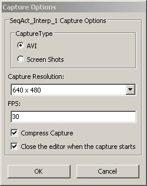

UDN
Search public documentation:
MovieCaptureJP
English Translation
中国翻译
한국어
Interested in the Unreal Engine?
Visit the Unreal Technology site.
Looking for jobs and company info?
Check out the Epic games site.
Questions about support via UDN?
Contact the UDN Staff
中国翻译
한국어
Interested in the Unreal Engine?
Visit the Unreal Technology site.
Looking for jobs and company info?
Check out the Epic games site.
Questions about support via UDN?
Contact the UDN Staff
ムービー キャプチャ
概要
インゲームのムービー キャプチャ
UDK.exe UDN_FeaturesDemo -BENCHMARK -FPS=30
MovieCaptures ディレクトリに置かれます。UDK ユーザーの場合は、次のようになります。
C:\UDK\[UDK Version]\UDKGame\MovieCaptures
インゲームのキャプチャ コマンド
インゲームでムービー キャプチャを開始 / 停止するには、次のようにコンソール コマンドまたはキーボードのショートカットキーを使用します。| 機能 | コンソール コマンド | キーボードのショートカット |
|---|---|---|
| キャプチャの開始 | startmoviecapture | Alt + R |
| キャプチャの停止 | stopmoviecapture | Shift + R |
Matinee のムービー キャプチャ

- Capture Type (キャプチャ タイプ)
- キャプチャをイメージシーケンスに出力するのか、ビデオファイルに出力するのかを指定します。
- AVI - キャプチャをビデオファイルに出力します。このファイルは、ゲームのインストールフォルダである
MovieCapturesの中に保存されます。 - Screen Shots (スクリーンショット) - イメージ ファイル シーケンスに出力します。このファイルは、ゲームのインストール フォルダである
ScreenShotsの中に保存されます。 $ Capture Resolution (キャプチャの解像度) - Matinee がキャプチャされるときに用いられる解像度を指定します。解像度を高くするほど、キャプチャの時間が長くなります。 $ Capture FPS (キャプチャのフレームレート) - Matinee がキャプチャされるときに用いられるフレームレートを指定します。
- Turn on Cinematic Mode (シネマティック モードを有効にする)
- これが有効になっている場合は、以下の設定項目にしたがって、ゲームがシネマティック モードになります。
- Disable Movement (移動を無効化) - これがチェックされると、プレイヤーの移動が無効化されます。
- Disable Turning (回転を無効化) - これがチェックされると、プレイヤーの回転が無効化されます。
- Hide Player (プレイヤーを非表示) - これがチェックされると、プレイヤーのメッシュのビジビリティ (表示 / 非表示) が、トグルオフされます (非表示に切り替えられます)。
- Disable Input (入力を無効化) - これがチェックされると、プレイヤーの入力が無効になります。
- Hide HUD (HUD を非表示) - これがチェックされると、HUD のビジビリティ (表示 / 非表示) が、トグルオフされます (非表示に切り替えられます)。